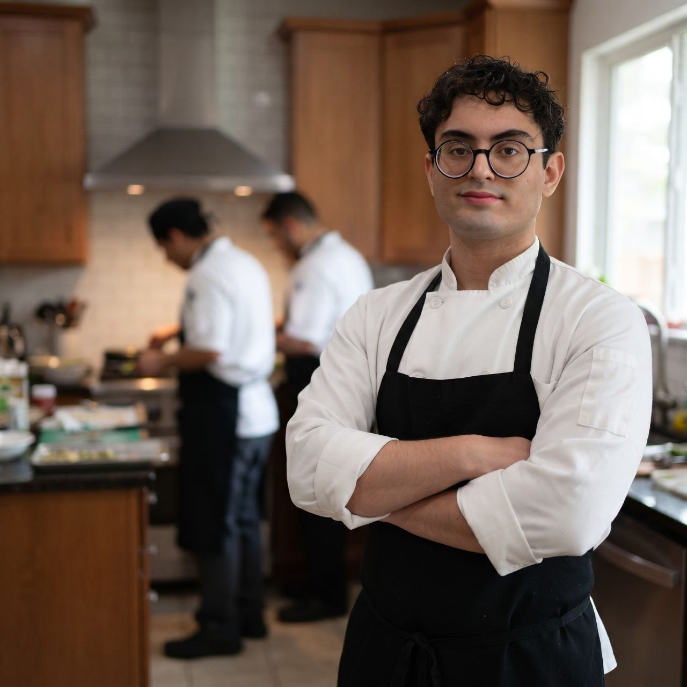

An international collection of filmed masterclasses, foundational techniques, and seasonal compositions from the studio kitchen.
No matching entries found
Adjust your search query or select another discipline.
Every gesture in the kitchen carries intention—from listening to the sizzle of a cold pan to resting a cut before the final slice.
Essays on thermal control, fermentation, and ingredient provenance written for cooks who value the reasoning behind every movement.

FOUNDER & EXECUTIVE CHEF
Chef Julian Vance
After fifteen years leading tasting-menu kitchens across Paris, Kyoto, and Copenhagen, ATELIER was created as an unfiltered digital monograph. Every masterclass strips away theatrical excess to focus purely on reproducible technique, sensory cues, and culinary clarity.